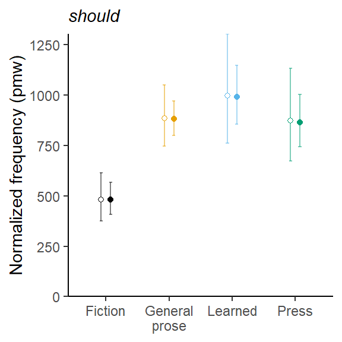

This blog post discusses two features of corpus data that make it more complicated to talk about replicability. The first one concerns the issue of non-independence of observations: Tokens extracted from a corpus are almost always clustered by source (author of speaker). The second one concerns the lack of balance in corpus data. In contrast to experiments, where the researcher has (almost) full control over the distribution of data points across the conditions of interest, the spread of corpus hits across the levels of relevant predictors is uneven.
We will consider, as an illustrative set of data, the frequency of modals in recent British and American English. These make for an interesting case study, not only because they have generated an exchange on replicability in the recent literature (Leech 2003; Millar) and they have been used by McEnery & Brezina to illustrate key ideas about replication. The data on which the following (selective) discussion is based are available from TROLLing (Sönning 2023), which should facilitate follow-up discussions.
The following points are relevant for both text-linguistic and variationist research.
The illustrative data used in this blog post is available from TROLLing .
Registered S3 method overwritten by 'bit':
method from
print.ri gamlss
Rows: 27000 Columns: 9
-- Column specification --------------------------------------------------------
Delimiter: "\t"
chr (6): text_id, modal, corpus, genre, text_category, variety
dbl (3): n_tokens, n_words, time_period
i Use `spec()` to retrieve the full column specification for this data.
i Specify the column types or set `show_col_types = FALSE` to quiet this message.
Warning: The `size` argument of `element_line()` is deprecated as of ggplot2 3.4.0.
i Please use the `linewidth` argument instead.

Dealing with imbalances in the data: Simple vs. weighted averages
Leech (2003: 228) looked at the frequency of different modals in the Brown family corpora. For should in Brown, he reports a raw frequency of 910 instances, which his consistent with the current output of CQPweb. Compared against the total number of words in Brown (1,148,454 words), this corresponds to a normalized frequency of 792 per million words (pmw). This occurrence rate is obtained in the following way: We divide the number of times should occurs in Brown (910).
Now let’s assume we want to reproduce these figures using a regression model. Since we are dealing with count data, we use a Poisson model. And since we are interested in normalized occurrence rates (and since texts differ very slightly in length), we will use a rate model that includes an offset to account for the length of texts. The output of this model is not a count, but a rate (i.e. normalized frequency) of “per 1 word”, i.e. a proportion. We can multiply this rate by 1,000,000 to get our preferred rate (i.e. pmw).
This works:
m <-glm( n_tokens ~1+offset(log(n_words)), data=should_Brown, family=poisson)
m |>tbl_regression(intercept =TRUE,exponentiate =TRUE,estimate_fun = purrr::partial(style_ratio, digits =6))
Characteristic
IRR1
95% CI1
p-value
(Intercept)
0.000792
0.000742, 0.000845
<0.001
1 IRR = Incidence Rate Ratio, CI = Confidence Interval
round(exp(coef(m))*1e6, 0)
(Intercept)
792
Next, we consider the frequency of should in the four broad genres.
should_Brown
# A tibble: 500 x 9
text_id modal n_tokens corpus genre text_category n_words time_period variety
<chr> <chr> <dbl> <chr> <fct> <chr> <dbl> <fct> <chr>
1 A01 shou~ 6 Brown press press_report~ 2206 1961 AmE
2 A02 shou~ 1 Brown press press_report~ 2268 1961 AmE
3 A03 shou~ 1 Brown press press_report~ 2234 1961 AmE
4 A04 shou~ 2 Brown press press_report~ 2202 1961 AmE
5 A05 shou~ 7 Brown press press_report~ 2202 1961 AmE
6 A06 shou~ 2 Brown press press_report~ 2224 1961 AmE
7 A07 shou~ 1 Brown press press_report~ 2263 1961 AmE
8 A08 shou~ 3 Brown press press_report~ 2196 1961 AmE
9 A09 shou~ 1 Brown press press_report~ 2224 1961 AmE
10 A10 shou~ 5 Brown press press_report~ 2252 1961 AmE
# i 490 more rows
Sönning, Lukas. 2023. “Background Data for: Some Obstacles to Repliction in Corpus Linguistics.” V1. Ann Arbor , MI: Dataverse NO. https://doi.org/10.3886/ ICPSR05404 .
Citation
BibTeX citation:
@online{sönning2023,
author = {Sönning, Lukas},
title = {Some Obstacles to Replication in Corpus Linguistics},
date = {2023-11-08},
url = {https://lsoenning.github.io/posts/2023-11-08-modals_replication/},
langid = {en}
}
![]()